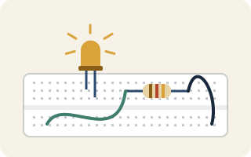
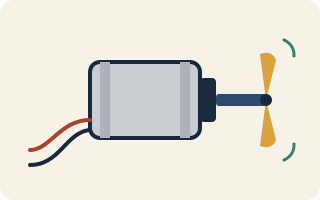
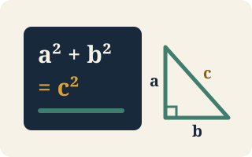
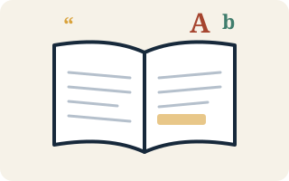
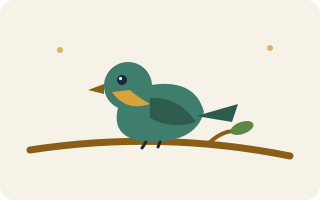

Knowledge library
Free lessons and printable guides to explore at your own pace — robotics, flight, space, birds, maths and more. Read online, or print a guide and take it outside.
 Lesson
Robotics & Electronics
Lesson
Robotics & Electronics
Robot Car Wiring: ESP32 + Motor Driver + Sonar
How the workshop robot car is wired — power rails, motor driver pins, servo and sonar, with a printable diagram.

Lesson Robotics & ElectronicsElectronics Fundamentals
Resistors, capacitors, transistors, regulators and filters — plus seven example circuits every builder should know.

Lesson Robotics & ElectronicsMotor Types: Brushed vs Coreless vs Brushless
Which motor goes in which project, and why each one needs a different kind of driver.
 Lesson
Flight & Drones
Lesson
Flight & Drones
Aeromodeling: A Complete Course
From paper planes to autonomous drones: the physics of flight, wing shapes, RC parts, motors and materials.
 Lesson
Flight & Drones
Lesson
Flight & Drones
Build a Micro RC Plane
Two complete foam-board plane builds with parts lists, weight budgets, cutting templates and wiring diagrams.
Printable guide SpaceCosmic Almanac
Planets, moons, stars, galaxies and black holes, with distances in light-time so they're easy to compare.

Printable guide MathsFormula Book — Class 9 Maths
Key points and formulas for all eight chapters, with worked examples. Revise one chapter at a time.
Printable guide MathsMental Math Toolkit
Squares, cubes, tables and shortcuts that turn a 2-minute calculation into a 10-second one.

Printable guide EnglishArticulate — English Study Notebook
A reading passage with word bank, proverbs, grammar fixes, spelling rules and speaking tips.

Printable guide Nature & BirdsRaptors of India
Eagles, kites, Shikra, falcons, harriers and vultures — identify by wing shape, tail and flight style.
Printable guide Nature & BirdsCommon Indian City Birds
Real photos plus field-mark sketches for the birds you see every day, and how to ID a bird in 20 seconds.
Printable guide Nature & BirdsRanganathittu — September Bird Guide
Storks, ibis, spoonbills and herons at the Ranganathittu bird sanctuary near Mysuru, four birds per page.
Printable guide Nature & BirdsRanganathittu Birds — Photo + Field Marks
A photo-and-sketch companion for spotting birds from the paths, islands and boat route.
Printable guide Nature & BirdsBird Spotting Trip Log
A kids' field notebook to fill in on a birding trip: observe first, identify second.
Nothing matches that yet. Try another word, or tell us on Instagram what you'd like to learn next.